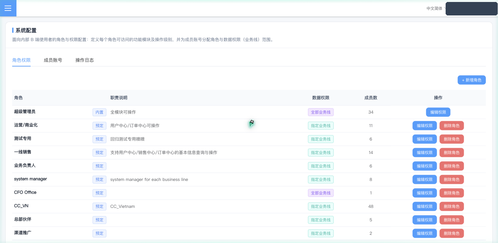
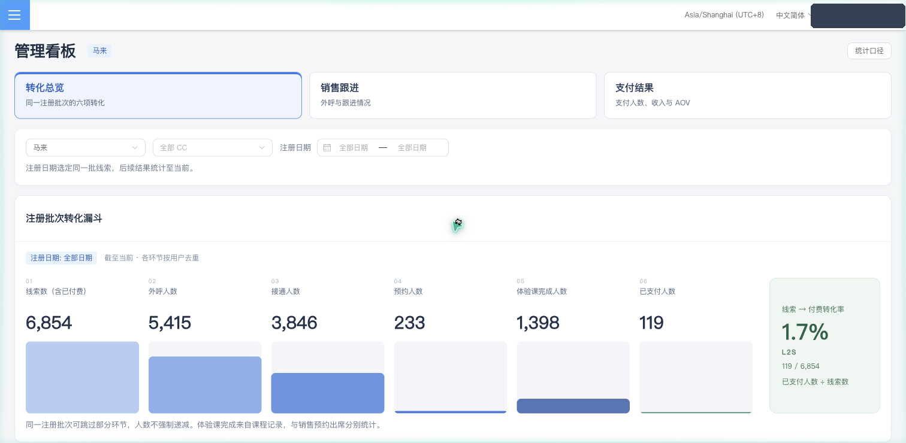
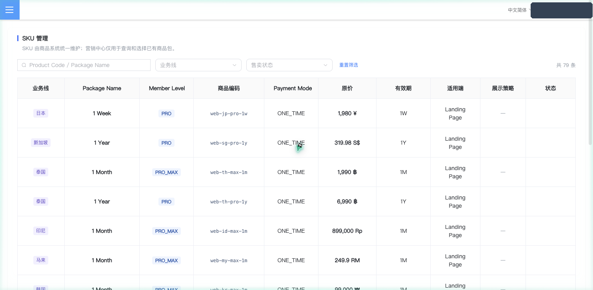
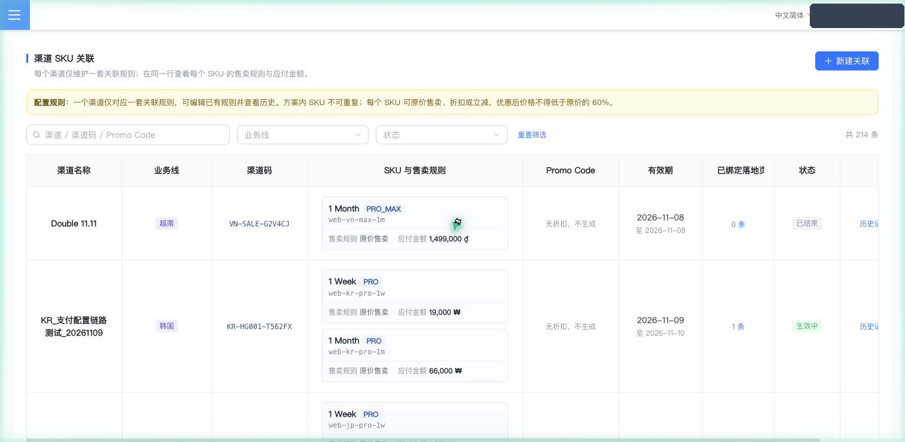
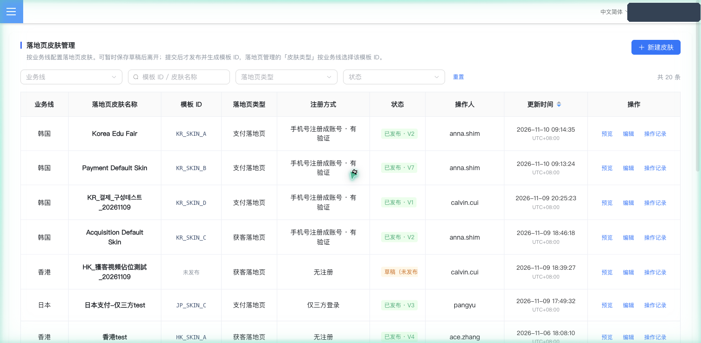
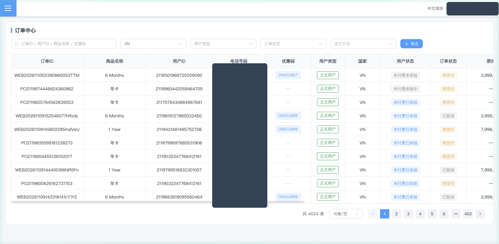
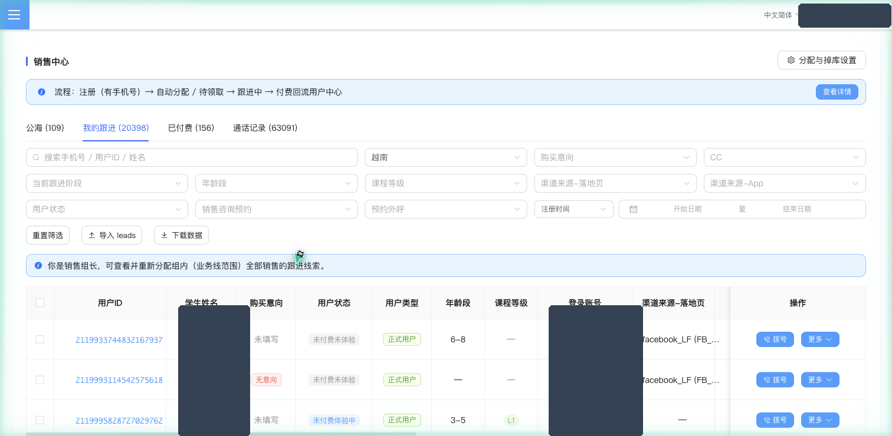
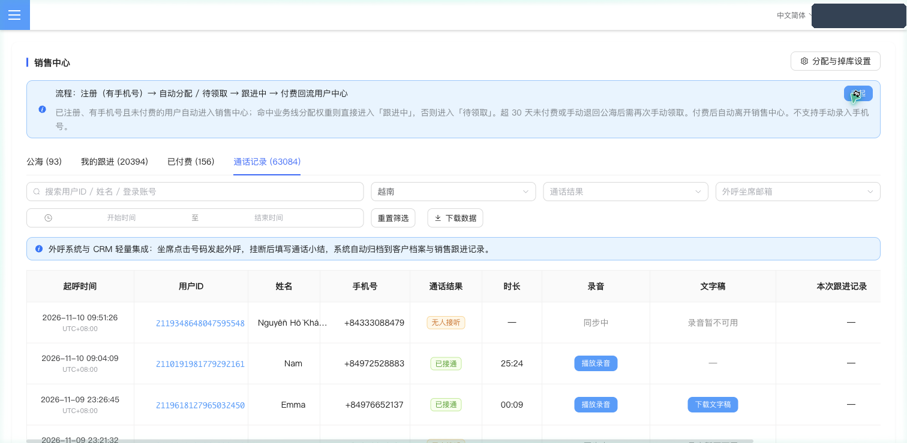
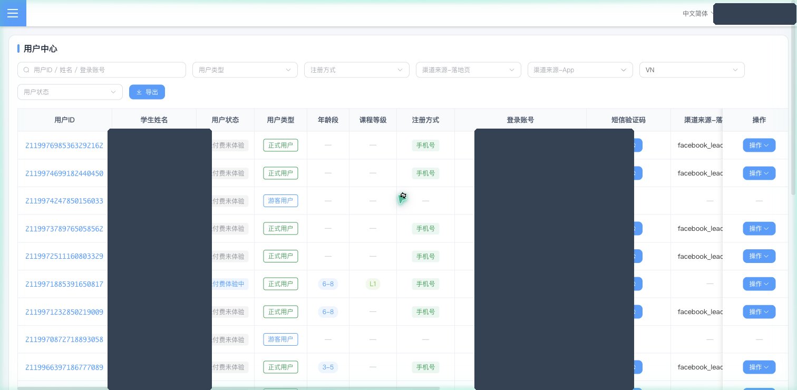

Dino CRM 使用手册
按任务和角色查找操作说明：一线伙伴跟着步骤做即可，管理员与超管的配置篇请切换角色筛选查看。
当前筛选没有匹配的手册，换个角色或关键词试试。
A-01
角色与权限配置总览
超级管理员管理员
系统配置页面包含角色权限、成员账号、操作日志三个页签；定义每个角色可访问的功能模块及操作级别，并为成员账号分配角色与数据权限（业务线）范围。
页面结构
入口：系统管理 → 系统配置。页面分三个页签：
| 页签 | 用途 | 详细手册 |
|---|
| 角色权限 | 定义角色、可访问模块与操作级别 | 见本篇 |
| 成员账号 | 新增/编辑成员、分配角色与业务线、绑定外呼 | 见 A-06 |
| 操作日志 | 审计所有配置变更 | 见 A-05 |

角色权限页签
- 入口：系统管理 → 系统配置 → 角色权限。
- 角色列表展示：角色名称（含内置 / 预定标记）、职责说明、数据权限（全部业务线 / 指定业务线）、成员数。
- 点击 + 新增角色 创建新角色；点击某行的 编辑权限 调整该角色可访问的模块与操作级别；删除角色 仅对非内置角色可用。
系统内置角色（真实清单，2026-11-10 核对）
| 角色 | 标记 | 数据权限 | 说明 |
|---|
| 超级管理员 | 内置 | 全部业务线 | 全模块可操作 |
| 运营/商业化 | 预定 | 指定业务线 | 用户中心 / 订单中心可操作 |
| 一线销售 | 预定 | 指定业务线 | 用户中心/销售中心/订单中心的基础信息查询与操作 |
| CC_VN / CC_TH | 预定 | 指定业务线 | 越南 / 泰国呼叫中心坐席角色 |
| system manager | 预定 | 指定业务线 | 每条业务线的系统管理员 |
| 业务负责人 / CFO Office / 总部伙伴 / 渠道推广 / 测试专用 | 预定 | 角色而异 | 按岗位划分 |
完成确认
角色列表中能看到新角色及正确的成员数；成员登录后菜单与数据范围符合预期。
注意事项
- 超级管理员为内置角色，不可删除；其权限调整影响面最大，变更前应与业务负责人确认。
- 角色的数据权限（业务线范围）决定成员能看哪个国家的数据，改角色会同时影响该角色下全部成员。
- 所有角色权限变更都会记入操作日志（见 A-05）。
截图

最后更新 2026-11-10
A-02
线索分配与掉库规则配置
超级管理员管理员
在销售中心右上角「分配与掉库设置」中，按业务线配置掉库规则与销售线索分配比例。
操作步骤
- 入口：销售管理 → 销售中心 → 右上角 分配与掉库设置。
- 选择 所属业务线（如马来）。
- 配置 掉库规则：开关 + 「领取后超过 N 分钟无跟进记录，自动掉库并重新按比例分配」（当前默认 7200 分钟）。
- 维护 线索分配比例 表：每个领取人一行，设置分配权重（0 表示不参与分配）。
规则联动（系统原文）
- 命中业务线分配权重（权重>0）的注册用户直接进入「跟进中」，否则进入公海「待领取」。
- 掉库后的线索按当前分配比例重新分配。
- 线索超 30 天未付费或被手动退回公海后，需再次手动领取。
完成确认
设置保存后，新注册线索按新比例流向对应销售；掉库规则在「我的跟进」中生效。
注意事项
- ⚠️ 修改分配比例会实时改变在线销售的线索流，建议非高峰时段操作，并在操作日志（A-05）中留痕。
- 权重设为 0 即暂停该销售的自动分配，不影响其已有跟进线索。
- 掉库分钟数与「30 天未付费回收」是两套独立机制：前者看跟进记录时效，后者看付费结果。
截图

最后更新 2026-11-10
A-03
数据权限与客户敏感信息保护
超级管理员管理员
配置谁能看到客户手机号、通话录音与导出权限，满足三国数据合规要求。（骨架篇，待补充）
配置范围（待评审确认）
| 配置项 | 说明 | 现状 | Owner |
|---|
| 手机号可见性 | 普通销售是否明文可见 / 掩码显示 | 待确认 | 待定 |
| 通话录音权限 | 谁可回放、谁可下载 | 待确认 | 待定 |
| 导出审批 | 用户/订单列表导出是否需要审批 | 待确认 | 待定 |
| 数据留存期限 | 通话记录与客户数据的保留与删除周期（越南/泰国/马来法规不同） | 待确认 | 待定 |
操作步骤
📷 待补充：数据权限配置入口与字段说明。
注意事项
越南《个人数据保护法》（2026-01-01 生效）与泰国 PDPA 对同意与跨境传输有明确要求，相关配置变更需法务确认后发布。
截图
📷 待补充
最后更新 2026-11-10
A-04
触达通道与外显号码配置
超级管理员管理员
管理各国外呼外显方案、IM 通道（Zalo/LINE/WhatsApp）账号与模板申请。（骨架篇，待补充）
配置范围（待评审确认）
| 配置项 | 说明 | 现状 | Owner |
|---|
| 动态外显方案 | 按国家匹配的外显号码池与健康度 | 已有（见 S-02 首次设置） | 待定 |
| Zalo OA / ZNS | 越南通道账号、模板报备与审核状态 | 待确认 | 待定 |
| LINE 官方账号 | 泰国通道账号与消息模板 | 待确认 | 待定 |
| WhatsApp WABA | 马来通道账号、模板类目与质量评级 | 待确认 | 待定 |
| 法定时段约束 | 各国广告外呼允许时段与频次上限 | 待确认 | 待定 |
操作步骤
📷 待补充：通道账号管理页、模板申请流程、失败码查看入口。
注意事项
模板变更受平台审核周期影响，上线新国家前应提前 2 周申请；通道禁用/降级会直接影响当日触达计划。
截图
📷 待补充
最后更新 2026-11-10
A-05
查询系统配置操作日志
超级管理员管理员
在系统配置 → 操作日志页签，按模块、操作人、时间范围追溯谁在什么时间改了什么配置。
操作步骤
- 入口：系统管理 → 系统配置 → 操作日志 页签。
- 按需组合筛选：模块（如成员账号、角色权限）、操作人邮箱、开始/结束时间。
- 点击 搜索 查看结果，列表字段为：模块、操作行为（新增/编辑/启用/停用等）、操作对象、操作人、操作时间。
完成确认
能定位到目标变更记录，确认操作人与发生时间。
注意事项
- 角色权限与成员账号的每一次变更都会自动记录，无需人工登记。
- 日志仅用于追溯核查，不可修改或删除。
- 建议管理员每周抽查一次与权限、外呼绑定相关的变更记录（见 A-03 的合规留存要求）。
截图

最后更新 2026-11-10
A-06
管理成员账号与绑定外呼
超级管理员管理员
在系统配置 → 成员账号页签新增/编辑成员、分配角色与业务线、启用停用账号，并为坐席绑定外呼。
操作步骤
- 入口：系统管理 → 系统配置 → 成员账号 页签。
- 点击 + 新增成员，填写邮箱与昵称，分配角色和业务线（数据权限随角色）。
- 对已有成员：按邮箱/昵称搜索，或按角色、状态筛选后点击 编辑成员 修改信息。
- 为呼叫中心坐席点击 绑定外呼（已绑定的显示 管理外呼），完成电话条账号关联（销售侧使用见 S-02）。
- 离职或长期不用时，将该成员状态切换为停用。
完成确认
成员列表中新成员可见、状态与业务线正确；坐席行显示已绑定外呼标记（CC）。
注意事项
- 角色决定功能范围，业务线决定数据范围，两者都要分配正确。
- 停用不会删除历史跟进与通话记录；重新启用后数据自动恢复可见。
- 成员的每一次新增/编辑/启停都会进入操作日志（见 A-05）。
截图

最后更新 2026-11-10
D-01
查看管理看板与转化漏斗
超级管理员管理员
按业务线查看同一注册批次的六环转化漏斗、销售跟进与支付结果。
操作步骤
- 入口：左侧菜单 → 管理看板。
- 选择业务线（如马来）、CC 与注册日期范围；顶部三张卡片分别为：转化总览（同一注册批次的六环转化）、销售跟进（外呼与跟进情况）、支付结果（支付人数、收入与 AOV）。
- 查看下方「注册批次转化漏斗」：01 线索数（含已付费）→ 02 外呼人数 → 03 接通人数 → 04 预约人数 → 05 体验完成人数 → 06 已支付人数，右侧汇总线索→付费转化率。
口径说明（页面原文）
- 注册日期选定同一批线索，后续结果统计至当前。
- 各环节按用户去重，同一注册批次可跳过部分环节，人数不强制递减（例如体验完成人数来自课程记录，与销售预约出席分别统计）。
完成确认
所选业务线的漏斗与转化率正常展示，与最近外呼节奏对得上。
注意事项
- 漏斗是管理员判断卡点的第一入口：预约人数相对接通人数偏低时，优先查外呼时段与话术（见 S-02 / A-04）。
- 看板数据随统计口径更新，对比多日趋势时保持筛选条件一致。
截图

最后更新 2026-11-10
M-00
营销中心配置总览
管理员超级管理员
营销中心五步配置链路：渠道 → SKU → 渠道 SKU 关联 → 落地页 → 皮肤，支撑投放归因与售卖。
配置链路
| 步骤 | 手册 | 一句话 |
|---|
| 1. 渠道 | M-01 | 建渠道，拿系统生成的渠道码 |
| 2. SKU | M-02 | 查商品系统维护的可售 SKU（只读） |
| 3. 渠道 SKU 关联 | M-03 | 一渠道一套规则：卖什么、什么价、什么优惠 |
| 4. 落地页 | M-04 | 获客页挂渠道；支付页挂 SKU，生成 LP ID |
| 5. 皮肤 | M-05 | 页面样式模板，发布后生成模板 ID |
归因与交易链路：渠道码 → 落地页(LP ID) → 注册/支付 → 订单(O-01) → 线索进销售中心(S-00)。
最后更新 2026-11-10
M-01
新增与维护渠道
管理员超级管理员
先维护业务线下的渠道类型，再建立具体的销售、KOL、Meta、Google 等渠道；渠道码由系统生成。
操作步骤
- 入口：营销中心 → 渠道管理。
- 点击 + 新增渠道，填写渠道名称，选择所属业务线与渠道类型。
- 系统自动生成渠道码（如
KR-HG001-T562FX，格式为 国家-类型-编号），可点击复制。 - 需要调整时点击行内 编辑。
字段说明
| 字段 | 说明 |
|---|
| 渠道名称 | 业务命名（如 Double 11.11、JP_KOL_koume_asobi） |
| 渠道码 | 系统生成、全局唯一，用于落地页与订单归因 |
| 渠道类型 | 销售 / KOL / 投放平台等，需先维护类型 |
| 所属业务线 | 韩国、日本、越南、沙特等 |
| 已创建落地页 | 该渠道下已建的落地页数量 |
完成确认
新渠道出现在列表并可复制渠道码；筛选（渠道名称/渠道码、业务线、渠道类型、投放平台）可用。
注意事项
- 渠道是归因的根：落地页（M-04）、SKU 关联（M-03）、订单（O-01）都挂靠渠道码。
- 一个渠道只维护一套关联规则（见 M-03）。
截图

最后更新 2026-11-10
M-02
查询可售 SKU
管理员超级管理员
SKU 由商品系统统一维护；营销中心仅用于查询和选择已有商品。
操作步骤
- 入口：营销中心 → SKU 管理。
- 按 Product Code / Package Name 搜索，或按业务线、售卖状态筛选。
- 核对字段：业务线、Package Name、Member Level、商品编码、Payment Mode、原价、有效期、适用端、展示策略、状态。
字段说明
- 商品编码 规律：
web-国家-等级-时长（如 web-th-pro-1y = 泰国 PRO 年卡）。 - Member Level：PRO / PRO_MAX。
- Payment Mode：ONE_TIME（一次性买断）等。
- 有效期：1W / 1M / 1Y。
- 展示策略：推荐 等；状态：上架。
- 原价按各国本地货币计价（日本 ¥、新加坡 S$、泰国 ฿、印尼 Rp、马来 RM）。
完成确认
能找到目标 SKU 及其原价与有效期，用于后续渠道关联（M-03）与落地页配置（M-04）。
注意事项
- 营销中心不能新增或修改 SKU，商品调整需走商品系统。
截图

最后更新 2026-11-10
M-03
配置渠道 SKU 关联与售卖价格
管理员超级管理员
每个渠道仅维护一套关联规则；在同一行查看每个 SKU 的售卖规则与应付金额，可配置折扣或立减。
配置规则（页面原文）
一个渠道仅对应一套关联规则，可编辑现有规则并查看历史。方案内 SKU 不可重复；每个 SKU 可原价售卖、折扣或立减，优惠后价格不得低于原价的 60%。
操作步骤
- 入口：营销中心 → 渠道 SKU 价格方案。
- 点击 + 新建关联，选择渠道（一个渠道一套规则）。
- 从已有 SKU（M-02）中选择商品，设置售卖方式：原价售卖 / 折扣 / 立减。
- 可选配置 Promo Code（未配置时显示「无折扣，不生成」）。
- 设置有效期；编辑现有规则会保留历史记录（行内「历史记录」）。
字段说明
| 字段 | 说明 |
|---|
| SKU 与售卖规则 | SKU、等级、商品编码、售卖规则、应付金额 |
| Promo Code | 该渠道的优惠码 |
| 有效期 | 关联生效区间 |
| 已绑定落地页 | 该方案下已建的落地页数量 |
| 状态 | 生效中 / 已结束 |
完成确认
渠道行显示正确的 SKU 应付金额与有效期；状态为「生效中」。
注意事项
- 关联决定落地页（M-04）上可售的商品与价格，改价格前先确认投放中的落地页。
- 优惠下限 60% 是硬约束，配置超出会被拦截。
截图

最后更新 2026-11-10
M-04
创建落地页与获取投放链接
管理员超级管理员
先选择页面类型：获客落地页仅关联渠道；支付落地页再关联 SKU，并可选择是否使用优惠。
创建规则（页面原文）
获客落地页只写入渠道、LP ID 和页面配置；支付落地页才写入所选 SKU，且仅在选择「使用优惠」时携带 Promo Code。
操作步骤
- 入口：营销中心 → 落地页管理。
- 点击 + 新增落地页，选择页面类型（获客落地页 / 支付落地页）。
- 获客落地页：选择渠道，配置页面（皮肤见 M-05）。
- 支付落地页：额外选择 SKU（来自渠道关联方案 M-03），如需优惠勾选「使用优惠」。
- 保存后生成 LP ID，可复制链接用于投放。
字段说明
| 字段 | 说明 |
|---|
| 页面类型 | 支付落地页 / 获客落地页 |
| 页面样式 | 模板 ID，如 KR_SKIN_A（来自 M-05） |
| LP ID | 系统生成（如 LP-EQJVRCQURJ），可复制 |
| 操作 | 详情 / 历史记录 / 编辑 / 复制链接 |
完成确认
列表出现新落地页，LP ID 可复制，「已绑定落地页」计数在渠道（M-01）中更新。
注意事项
- 落地页挂靠渠道码，归因链路为：渠道（M-01）→ 渠道 SKU 关联（M-03）→ 落地页（本篇）→ 订单（O-01）。
- 更换页面样式需先在皮肤管理发布对应业务线的模板。
截图

最后更新 2026-11-10
M-05
配置落地页皮肤
管理员超级管理员
按业务线配置落地页皮肤；提交后才发布并生成模板 ID，供落地页管理选择。
页面说明（原文）
按业务线配置落地页皮肤。可暂时保存草稿后离开；提交后才发布并生成模板 ID，落地页管理的「皮肤类型」按业务线选择该模板 ID。
操作步骤
- 入口：营销中心 → 落地页皮肤管理。
- 点击 + 新建皮肤，选择业务线与落地页类型（支付落地页 / 获客落地页）。
- 配置注册方式：手机号注册成账号（有/无验证）、无注册、仅三方登录。
- 可保存草稿；点击提交后发布并生成模板 ID（如
KR_SKIN_A）。 - 行内操作：预览、编辑（发布后编辑会生成新版本号 V2/V3…）、操作记录。
字段说明
| 字段 | 说明 |
|---|
| 模板 ID | 发布后生成，落地页管理（M-04）按此选择 |
| 状态 | 已发布 · V版本号 / 草稿（未发布） |
| 注册方式 | 决定落地页上用户的注册行为 |
完成确认
皮肤状态为「已发布」且有模板 ID；在落地页管理新建时可选到该模板。
注意事项
- 未发布的草稿不会出现在落地页管理的皮肤选项中。
- 每次编辑发布都会产生新版本，历史可通过操作记录追溯。
截图

最后更新 2026-11-10
O-01
查询订单与导出订单列表
销售专员销售组长管理员超级管理员
在订单中心按订单ID/用户/商品/优惠码查询订单，核对订单状态与支付方式，支持导出。
操作步骤
- 入口：订单管理 → 订单中心。
- 搜索支持：订单ID / 用户ID / 商品名称 / 优惠码。
- 按国家、用户类型、订单状态、支付方式筛选。
- 核对字段：订单ID、商品名称、用户ID、电话号码、优惠码、用户类型、国家、用户状态、订单状态、原价。
- 需要批量数据时点击 导出。
字段说明
- 订单ID 前缀区分来源：
PO 开头为 App 内购买，WEB 开头为网页落地页购买。 - 商品名称：年卡 / 1 Year / 6 Months 等套餐。
- 订单状态：待支付 / 已取消 / 已支付 等。
完成确认
能定位目标订单并核对金额与状态。
注意事项
- 使用优惠码（Promo Code）的订单会显示折扣码；优惠后价格不得低于原价的 60%（见 M-03 配置规则）。
- 订单与用户中心数据联动：付费后用户状态变为「付费」，线索自动离开销售中心（见 S-00）。
截图

最后更新 2026-11-10
S-00
销售中心总览与线索流转规则
销售专员销售组长管理员超级管理员
销售中心包含公海、我的跟进、已付费、通话记录四个页签；线索流转遵循固定流程，另有组长专属的分配与掉库设置。
页面结构
入口：销售管理 → 销售中心。顶部提示线索流转全流程：
注册（有手机号）→ 自动分配 / 待领取 → 跟进中 → 付费回流用户中心

线索流转规则（点击「查看详情」可查看原文）
- 已注册、有手机号且未付费的用户自动进入销售中心。
- 命中业务线分配权重则直接进入「跟进中」，否则进入「待领取」（公海）。
- 超 30 天未付费或手动退回公海后，需再次手动领取。
- 付费后自动离开销售中心。
- 系统不支持手动录入手机号。

四个页签
| 页签 | 内容 | 相关手册 |
|---|
| 公海 | 待领取线索，行操作为「领取跟进」 | S-01 |
| 我的跟进 | 自己名下线索，行操作为「拨号」+「更多」（试听课报告/更新跟进/重新分配线索/添加会员时长） | S-02 / S-03 / S-04 |
| 已付费 | 已支付用户（用户状态=付费），同样可拨号与跟进 | S-02 |
| 通话记录 | 全部外呼记录与录音 | S-05 |
通用筛选与操作
- 筛选器：搜索手机号/用户ID/姓名、国家、购买意向、CC、当前跟进阶段、年龄段、课程等级、渠道来源-落地页、渠道来源-App、用户状态、销售咨询预约、预约外呼、注册时间区间。
- 工具按钮：重置筛选、导入 leads、下载数据。
组长能力
销售组长登录后会看到提示：「可查看并重新分配组内（业务线范围）全部销售的跟进线索」，并可使用右上角分配与掉库设置（见 A-02）。
最后更新 2026-11-10
S-01
如何领取一条新线索
销售专员销售组长
从销售中心「公海」页签领取待跟进线索。
操作步骤
- 入口：销售管理 → 销售中心 → 公海 页签。
- 用筛选器缩小范围（国家、购买意向、年龄段、渠道来源等），或直接搜索手机号 / 用户ID / 姓名。
- 点击目标行的 领取跟进。
- 到「我的跟进」确认该客户已归属自己。
线索是怎么进入公海的
- 未命中分配权重的注册用户进入「待领取」（公海）。
- 被跟进超 30 天未付费、或被手动退回的线索会回到公海。
完成确认
「我的跟进」中出现该客户，公海计数相应减少。
注意事项
- 不要领取并非自己负责的客户。
- 购买意向字段（有意向 / 无意向 / 未填写）可帮你优先跟进高意向线索。
截图

最后更新 2026-11-10
S-02
如何外呼并留下通话小结
销售专员销售组长
在销售中心点击「拨号」发起外呼，挂断后补全通话小结并保存；首次使用需完成电话条设置。
操作步骤
- 入口：销售管理 → 销售中心 → 我的跟进（或已付费）页签。
- 核对客户信息后，点击该行的 拨号 发起外呼。
- 通话结束后，补全通话小结和购买意向并保存。
- 到「通话记录」核对。
系统行为（页面原文）
外呼系统与 CRM 轻量集成：坐席点击号码发起外呼，挂断后填写通话小结，系统自动归档到客户档案与销售跟进记录。
完成确认
通话记录与客户时间轴中均能找到本次通话。
注意事项
- 通话结果由系统自动记录；未保存小结不等于已完成记录。
- 系统不支持手动录入手机号，外呼必须通过行内「拨号」发起。
首次外呼前设置
仅首次登录电话条并发起外呼的销售需要完成一次。
- 电话条「登录」，模式选择 网页。
- 「请选择外显规则」→ 动态外显号码方案匹配 → 按国家匹配。
最后更新 2026-11-10
S-03
如何记录一次跟进
销售专员销售组长
在「我的跟进」通过行内「更多 → 更新跟进」，把客户反馈、下一步动作和回访时间留在 CRM。
操作步骤
- 入口：销售管理 → 销售中心 → 我的跟进 页签。
- 找到客户，点击 更多 → 更新跟进。
- 填写客户反馈、下一步动作、回访时间。
- 保存后检查时间轴。
完成确认
最新备注和最后更新时间已刷新。
注意事项
- 备注必须能让下一位同事看懂。
- 「我的跟进」行内「更多」菜单还提供：试听课报告、重新分配线索（组长）、添加会员时长。
- 长时间无跟进记录的线索会被自动掉库（默认领取后 7200 分钟，见 A-02），及时更新跟进就是保住线索的方式。
截图
最后更新 2026-11-10
S-04
如何转分配或退回公海
销售组长超级管理员
销售组长可在「我的跟进」通过「更多 → 重新分配线索」交接线索；退回公海需填写原因。
操作步骤
- 入口：销售管理 → 销售中心 → 我的跟进 页签。
- 重新分配：点击 更多 → 重新分配线索，选择新销售并确认。
- 退回公海：在更多菜单中选择退回，填写退回原因后确认。
完成确认
时间轴中有交接或退回记录；被转出的线索从「我的跟进」消失。
注意事项
- 退回原因必须写清楚，退回后需再次手动领取。
- 组长可查看并重新分配组内（业务线范围）全部销售的跟进线索；普通销售没有重新分配权限。
- 已付费用户的行内菜单没有退回公海选项。
- 超过 30 天未付费的线索会被系统自动回收，无需手动操作。
截图
最后更新 2026-11-10
S-05
如何查看通话记录与录音
销售专员销售组长
在销售中心「通话记录」页签按客户或通话结果回看外呼记录，可播放录音、下载文字稿。
操作步骤
- 入口：销售管理 → 销售中心 → 通话记录 页签。
- 按用户ID / 姓名 / 登录账号搜索，或按国家、通话结果、外呼坐席邮箱、时间范围筛选。
- 核对：起呼时间、用户ID、姓名、手机号、通话结果、时长、录音、文字稿、本次跟进记录。
- 已接通的通话可点击 播放录音；有文字稿的点击 下载文字稿。
字段说明
- 通话结果：已接通 / 无人接听等。
- 录音：显示「播放录音」或「同步中」（刚挂断的通话录音需要同步时间）。
- 文字稿：显示「下载文字稿」或「录音暂不可用」。
完成确认
能找到目标通话并判断下一步。
注意事项
- 刚结束的通话录音可能显示「同步中」，稍后刷新即可。
- 普通销售通常仅可查看自己的通话记录。
截图

最后更新 2026-11-10
U-00
用户与订单管理总览
销售专员销售组长管理员超级管理员
用户管理（用户列表）与订单管理（订单中心）两个模块的入口与手册索引。
手册索引
| 页面 | 手册 | 常用操作 |
|---|
| 用户管理 → 用户列表 | U-01 | 查找用户、修改信息、添加会员、重发验证码、导出 |
| 订单管理 → 订单中心 | O-01 | 查询订单（PO/WEB 前缀）、筛选状态、导出 |
数据联动：用户付费 → 用户状态变「付费」→ 线索自动离开销售中心（S-00）→ 订单中心可查该笔订单（O-01）。
最后更新 2026-11-10
U-01
查找用户与维护用户信息
销售专员销售组长管理员超级管理员
在用户中心按条件查找用户、重发短信验证码、导出用户列表，并使用行内操作（修改信息/添加会员/修改试听课等级）。
操作步骤
- 入口：用户管理 → 用户列表（页面标题为「用户中心」）。
- 按用户ID / 姓名 / 登录账号搜索，或按用户类型、注册方式、渠道来源-落地页、渠道来源-App、国家、用户状态筛选。
- 需要重发验证码时，点击该行「短信验证码」列的刷新按钮。
- 行内 操作 菜单提供三项：修改信息、添加会员、修改试听课等级。
- 需要批量数据时点击 导出。
字段说明
- 用户状态：未付费未体验 / 未付费体验中 / 付费 等。
- 用户类型：正式用户 / 游客用户（游客用户无登录账号，无行内操作）。
- 注册方式：手机号 等；年龄段与课程等级（如 6–8、L1/L2）来自用户学习数据。
完成确认
修改信息或添加会员后，列表字段立即刷新。
注意事项
- 客户手机号为敏感信息，注意保护（见 A-03）。
- 导出功能受权限与合规要求约束，导出数据仅限业务用途。
截图

最后更新 2026-11-10